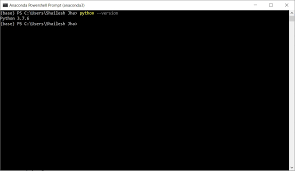

7 Getting started
Before you can write a program, your machine needs three things: a folder to work in, a Python to run your code, and an editor to write it in. This chapter installs all three. It takes about fifteen minutes, most of which is waiting, and you only do it once.
Nothing here can break your computer. If a step does not do what it says it will, that is information rather than failure — read ?sec-when-something-goes-wrong at the bottom, and bring the exact error message to class.
The course folder
Everything you need for the whole term lives in one folder. Download it now:
instructing-machines.zip — about two megabytes.
Unzip it, and put the folder somewhere plain and short that belongs to you:
- Windows:
C:\bioprog\— so you end up withC:\bioprog\instructing-machines\ - Mac: your home folder — so you end up with
~/bioprog/instructing-machines/
Three things to avoid, all of which cause trouble later:
- Do not leave it inside
Downloads. You will lose it. - Do not put it in OneDrive or iCloud Drive. They sync files in and out from under you while Python is reading them, and that produces errors nobody can explain.
- Do not use a path with æ, ø, å or spaces in it. Some of the tools we use are still not fluent in Danish.
Inside the folder you will find a file called START-HERE.md. It says the same things this chapter says, only shorter, so you have them at hand when the book is not open.
Installing pixi
pixi is the program that installs Python for you. It is worth understanding what it does, because it explains why this course is not going to give you the version-conflict misery that programming courses are famous for.
Pixi installs one self-contained Python per project folder. Not one Python for your whole machine — one for this folder. It lives in a hidden .pixi folder inside the course folder, nothing is installed anywhere else, and deleting the course folder removes every trace of it. So the Python we use cannot collide with a Python you install next year for something else, and if your installation ever ties itself in a knot, the cure is to delete the folder and start again.
Open your Terminal application, paste this line, and press Enter:
curl -fsSL https://pixi.sh/install.sh | shDownload and run the installer:
https://github.com/prefix-dev/pixi/releases/latest/download/pixi-x86_64-pc-windows-msvc.msi
Double-click it and click through. That is all.
If you have one of the rare ARM-based Windows machines — a Surface Pro X, for instance — use pixi-aarch64-pc-windows-msvc.msi instead.
Now, whichever machine you are on: close the terminal window and open a new one.
A program that has just been installed is invisible to terminals that were already open. A terminal reads the list of available programs once, when it starts, and does not look again. So the terminal you installed pixi from does not know pixi exists.
Close it. Open a new one. This one detail is responsible for more confusion than everything else on this page combined.
Check that it worked by typing:
Terminal
$ pixi --version
pixi 0.60.0You will probably see a different version number, and that is fine. If you instead see something about the command not being recognised, see ?sec-when-something-goes-wrong.
The text editor
You will also need a text editor. A text editor is where you write your Python code. For this course, we will use Visual Studio Code — or VS Code for short. You can download it from code.visualstudio.com. If you open VS Code, you should see something like Figure 7.1.
You may wonder why we cannot use Word to create and edit files with programming code. The reason is that a text editor made for programming, such as VS Code, only saves the actual characters you type. So, unlike Word, it does not silently save all kinds of formatting, like margins, boldface text, headers, etc. With VS Code, what you type is exactly what is in the file when you save it. In addition, where Word is made for prose, VS Code is made for programming and has many features that will make your programming life easier.

Opening the folder
Start VS Code, then choose File → Open Folder… and select the instructing-machines folder — the folder itself, not a file inside it.
This matters more than it looks like it does, so it is worth one sentence of explanation. The course folder carries a small settings file that tells VS Code where the course Python lives, and VS Code only reads those settings when the folder is what you opened. Open a single file instead and VS Code has no idea any of this exists.
VS Code will show a small notification offering to install the recommended extensions for this folder. Say yes. It is installing Python support, notebook support, and pixi support. If you miss the notification, open the Extensions panel on the left and search for ms-python.python, ms-toolsai.jupyter and renan-r-santos.pixi-code.
Installing the course environment
Inside VS Code, open a terminal with Terminal → New Terminal. It opens already standing in the course folder, which saves you having to walk there yourself. Type:
Terminal
$ pixi installNow go and make coffee. The first run downloads a few hundred megabytes and takes a couple of minutes; it will never take that long again. When it is done there is a new hidden .pixi folder in the course folder containing your very own Python.
Then check it:
Terminal
$ pixi run check
Everything is installed. Python 3.13.5If you see that line, you are finished with the hard part.
The check in that command is not a built-in pixi command — it is a little errand we wrote for you and stored in the folder’s pixi.toml file. You will meet a second one, pixi run get, in ?sec-getting-the-notebooks. This is a small preview of something the whole course is about: a program is just a name for a sequence of instructions somebody wrote down once so that nobody has to write them down again.
Getting the notebooks
The notes you are reading are also notebooks you can run. Week one’s two notebooks are already in the course folder, in the week1 subfolder. Every other chapter you fetch when we get to it, so that the notebook you work in is always the current version of the chapter you are reading. In the VS Code terminal:
Terminal
$ pixi run get iteration
Fetching https://munch-group.org/instructing-machines/notebooks/iteration.ipynb
Saved iteration.ipynb. Open it in VS Code and pick the .pixi kernel.To see what you can ask for, run it without a name:
Terminal
$ pixi run getIf you already have a notebook of that name, yours is left exactly as it is and the fresh copy arrives beside it as iteration-2.ipynb. Nothing you have written is ever overwritten, so it is always safe to ask for a clean copy.
There is also a Download notebook button in the margin of every chapter on the website. It gives you the identical file. The only difference is that it lands in your Downloads folder and you have to move it into the course folder yourself — worth knowing about for the day the terminal is being difficult.
The terminal
You have now typed four commands into a terminal without anyone explaining what a terminal is. Let us fix that, because you will be living in one.
On Mac, the terminal is an application called Terminal. You can find it by typing “Terminal” in Spotlight Search. When you start it, you will see something like Figure 7.2. On Windows, it is called Windows PowerShell, and you should be able to find it from the Start menu — make sure you open Windows PowerShell and not some other shell (the name should be exactly that). When you do, you should see something like Figure 7.3.


What are Windows PowerShell and this Terminal thing? Both are what we call terminal emulators. They are used to run other programs, like the ones you will write yourself. I will informally refer to both as “the terminal”. So if I write something like “open the terminal”, you should open Windows PowerShell if you are running Windows and the Terminal application if you are on a Mac.
The terminal you opened inside VS Code with Terminal → New Terminal is the same thing, in a smaller window, already standing in the right folder. Everything below works there too, and that is where I would do it.
The terminal is a very useful tool. However, to use it, you need to know a few basics. First of all, a terminal lets you execute commands on your computer. You type the command you want and then hit Enter. The place where you type is called a prompt (or command prompt), and it may look a little different depending on which terminal emulator you use. In this book, we represent the prompt with the character $. So a command in the examples below is the line of text to the right of the $.
When you open the terminal, you are put in some folder. You can see which folder you are in by typing pwd, and then pressing Enter on the keyboard. When you press Enter, you tell the terminal to execute the command you have written. In this case, the command you typed tells you the path to the folder we are in. If I do it, I get:
Terminal
$ pwd
/Users/kasper/programmingSo, right now, I am in the programming folder. /Users/kasper/programming is the folder’s path or “full address”, with slashes (or backslashes on Windows) separating nested folders. So programming is a subfolder of kasper, which is a subfolder of Users. That way, you know which folder you are in and where that folder is.
Let us see what is in this folder. You can use the ls command (l as in Lima and s as in Sierra). When I do that and press Enter I get the following:
Terminal
$ ls
notes projectsThere seem to be two other folders, one called notes and another called projects. If you are curious about what is inside the notes folder, you can “walk” into the folder with the cd command. To use this command, you must specify which folder you want to walk into (in this case, notes). We do this by typing cd, then a space, and then the folder’s name. When I press Enter I get the following:
Terminal
$ cd notes
$It seems that nothing really happened, but if I run the pwd command now to see which folder I am in, I get the following:
Terminal
$ pwd
/Users/kasper/programming/notesJust to keep track of what is happening: before we ran the cd command, we were in the /Users/kasper/programming folder, and now we are in /Users/kasper/programming/notes. This means that we can now use the ls command to see what is in the notes folder:
Terminal
$ ls
$Again, it seems like nothing happened. Well, ls does not show anything if the folder we are in is empty. So notes must be empty. Let us go back to where we came from. To walk “back” or “up” to /Users/kasper/programming, we again use the cd command, but we do not need to name a folder this time. Instead, we use the special name .. to say that we wish to go to the parent folder, i.e. the folder we just came from:
Terminal
$ cd ..
$ pwd
/Users/kasper/programmingWhen we run the pwd command, we see that we are back where we started. Let us see if the two folders are still there:
Terminal
$ ls
notes projectsThey are!
Hopefully, you can now navigate your folders and see what is in them. You will need this later to reach the folders with the code you write for the exercises and projects during the course.
| Action | Windows | Mac |
|---|---|---|
| Show current folder | pwd |
pwd |
| List folder content | ls |
ls |
| Go to subfolder “notes” | cd notes |
cd notes |
| Go to parent folder | cd .. |
cd .. |
Because Windows PowerShell is being polite. Its own names for these are Get-Location, Get-ChildItem and Set-Location, which nobody wants to type, so it accepts pwd, ls and cd as nicknames for them. Older Windows tutorials tell you to type dir instead of ls. That works too. You do not need it.
When something goes wrong
“pixi is not recognized as an internal or external command” (Windows) or “command not found: pixi” (Mac). The terminal you are typing in was opened before pixi was installed. Close it and open a new one. If you are inside VS Code, quit VS Code entirely and start it again.
Windows says a script cannot be run, or mentions an execution policy. You have found a PowerShell install script somewhere. Do not fight with it — use the .msi installer linked in ?sec-installing-pixi instead. It needs no permissions of that kind.
pixi install fails part-way, or complains about paths being too long. The folder is almost certainly too deep, or inside OneDrive. Move the whole folder to C:\bioprog\ and run pixi install again.
VS Code will not offer the right kernel. Make sure you opened the folder (?sec-opening-the-folder), that pixi install has finished, and that the Python and Jupyter extensions are installed. Then run Developer: Reload Window from the command palette (Ctrl+Shift+P, or Cmd+Shift+P on a Mac).
A widget shows as blank space, or as raw text. You are running the notebook on the wrong Python. Click Select Kernel in the top right of the notebook and choose the one whose path contains .pixi.
Nothing works and the lecture has already started. Open the course website and use the in-browser notebooks. They run Python inside the browser with nothing installed, they are slower and slightly limited, and they will get you through the next hour. Then come to the study café and we will fix your installation properly.
If you see red text you cannot place, take a screenshot — or better, copy the text itself — and send it to kaspermunch@birc.au.dk. Bring the exact message, not a description of it. Reading error messages is one of the things this course is actually about.
You are all set
Well done! You are all set to start the course. Have a cup of coffee, and look forward to your first program. While you sip your coffee, I need you to take an oath (one of three you will take during this course). Raise your right hand! (put your coffee down first).
I swear never to copy and paste code examples from this book into my text editor. I will always read the examples and then type them into my editor.
This serves three purposes (as if one was not enough):
- You will be fully aware of every bit of each example.
- You will learn to write code correctly and without omissions and mistakes.
- You will get Python “into your fingers”. It sounds silly, but it will get into your fingers.
You can take your hand down now.